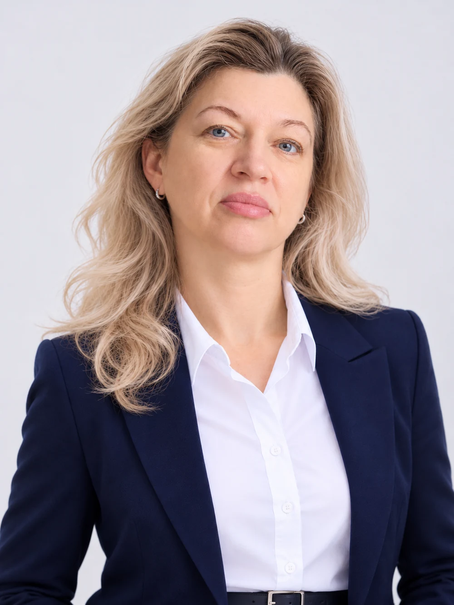

Гражданское и арбитражное право
Анализирую договорные обязательства, веду имущественные и иные гражданско-правовые споры, представляю доверителей в судах.
Меня зовут Елена Алексеевна Глебова. Я — адвокат Адвокатской палаты Московской области. Представляю доверителей в судах, провожу правовую аналитику, проверяю договоры и готовлю правовые позиции.

Я окончила Московскую государственную юридическую академию в 2000 году и веду адвокатскую деятельность с июня 2003 года.
Профессиональная практика охватывает вопросы гражданского, арбитражного, корпоративного, трудового, семейного и наследственного права, а также защиту прав потребителей.
Значительную часть моей работы составляют правовая аналитика, исследование договорных отношений, подготовка письменных заключений, анализ судебной практики и разработка правовых позиций по сложным и нестандартным вопросам.
С февраля 2013 года я работаю экспертом правовой системы в Медиагруппе «Актион-МЦФЭР». Готовлю письменные правовые разъяснения для бизнеса и специалистов, исследую гражданское, процессуальное, трудовое и корпоративное право, анализирую договорные конструкции и альтернативные правовые позиции.
Проверить сведения в реестре адвокатов АПМО ↗
Реестр адвокатских образований АПМО ↗
Перечень направлений отражает области моей профессиональной работы, но не означает автоматического принятия любого поручения. До начала работы я обсуждаю задачу и проверяю отсутствие конфликта интересов.
Анализирую договорные обязательства, веду имущественные и иные гражданско-правовые споры, представляю доверителей в судах.
Провожу правовую экспертизу договоров поставки, аренды, подряда, возмездного оказания услуг, агентирования, лизинга и других договорных конструкций.
Анализирую корпоративные отношения и сопровождаю отдельные проекты организаций.
Работаю с вопросами доказывания, сроков, подсудности, обеспечительных мер и обжалования судебных актов.
Анализирую отдельные вопросы трудовых отношений, дистанционной работы, дисциплинарных взысканий и прекращения трудового договора.
Разбираю правовые вопросы обработки персональных данных и охраны коммерческой тайны.
Я начинаю работу с изучения фактических обстоятельств, документов и применимого законодательства. При необходимости сопоставляю правовые подходы и анализирую судебную практику.
Если ситуация допускает несколько правовых решений, я анализирую варианты толкования норм и возможное развитие спора. По итогам исследования формирую правовую позицию, оцениваю риски и предлагаю возможные дальнейшие действия.
Содержание и объём поручения я согласую с доверителем до начала работы.
Для начала достаточно обозначить общую категорию правового вопроса по телефону или электронной почте.
В первом сообщении не следует направлять подробности дела и документы. Я отдельно согласую с вами безопасный способ передачи материалов.